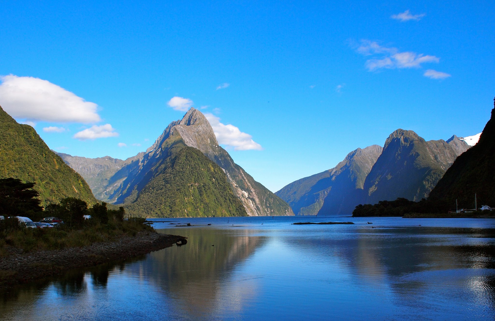

This a large ocean inlet is a bit bigger than a bay and is flanked by sheer rock faces and majestic peaks. However, sounds are formed when a river valley is flooded with the sea, whereas Milford Sound carved out by an erosion of ancient glacial ice. Milford Sound tops the rainfall meter of New Zealand.